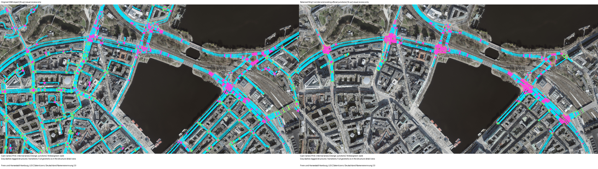
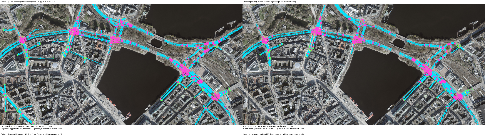
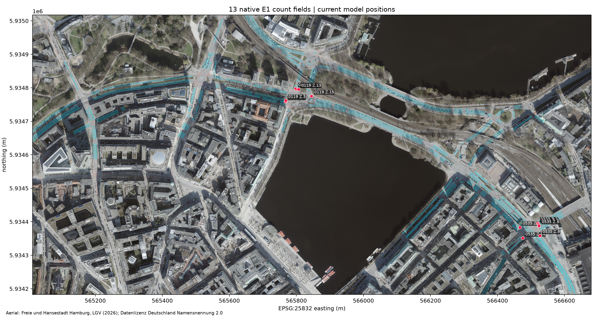
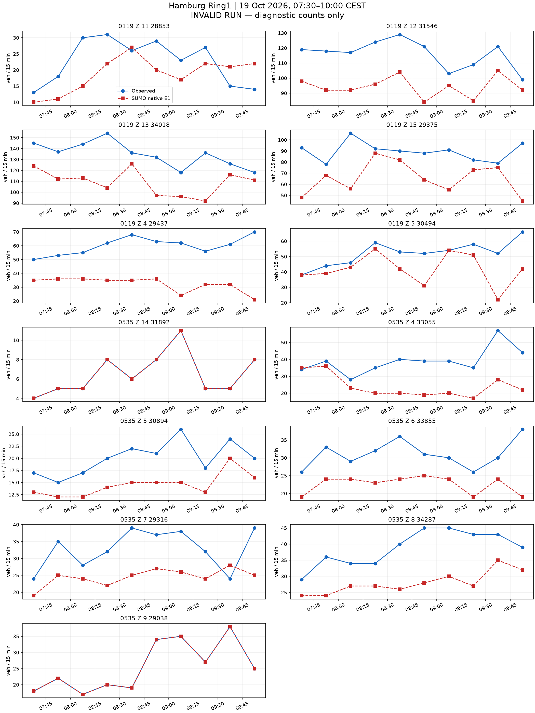
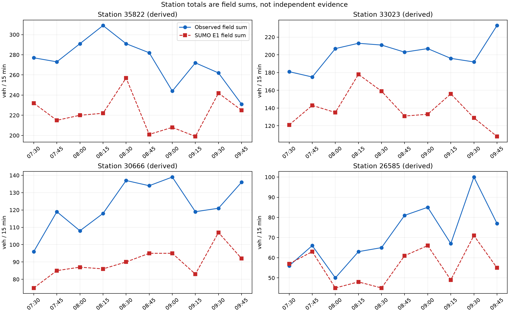
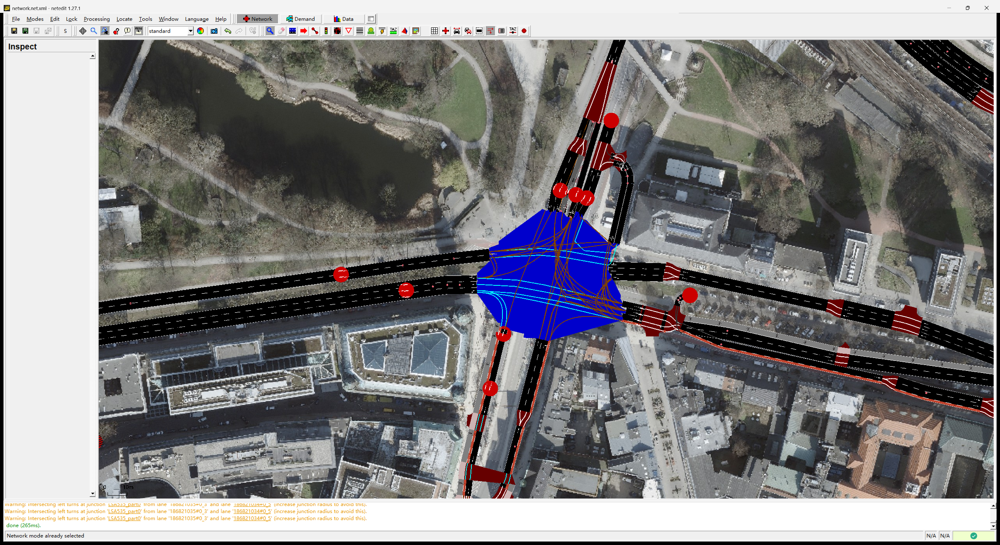

所有原生计数和运行有效性均保留。流程输出不等于零误差标定已完成。







{
"schema": "astra.hamburg-readme-final-results/v1",
"native_status": "invalid",
"execution_status": "pass",
"valid_run": false,
"exact_count_fit": false,
"formal_field_metrics": null,
"diagnostic_field_MAE": 12.753846153846155,
"diagnostic_max_abs_error": 52,
"field_rows": 130,
"station_rows": 40,
"exact_station_rows": 0,
"missing_station_rows": 0,
"diagnostic_station_MAE": 40.5,
"diagnostic_station_max_abs_error": 125,
"missing_field_rows": 0,
"exact_field_rows": 22,
"completion": {
"loaded": 8640,
"inserted": 8019,
"arrived": 7625,
"running": 394,
"waiting": 621,
"teleports": 1,
"collisions": 1,
"discarded": 0
},
"network_sha256": "2d29bdb4183a9491bbd220324742d3a48a3484a96de8adc0eda984ad477cdb7e",
"control_sha256": "a6967ad4ecbb658258df3eca2a818beaebceea4d236f5509f8c55e9f1c57849d",
"measurement": "SUMO native E1 nVehContrib only",
"scenario": {
"schema": "astra.hamburg-readme-end-to-end/v1",
"status": "prepared",
"formal_result": false,
"exact_count_fit": false,
"vehicles": 8640,
"vehicle_km": null,
"field_bins": 130,
"station_bins": 40,
"profiles_used": 29,
"all_integer_rows_exact": null,
"network_sha256": "2d29bdb4183a9491bbd220324742d3a48a3484a96de8adc0eda984ad477cdb7e",
"control_sha256": "a6967ad4ecbb658258df3eca2a818beaebceea4d236f5509f8c55e9f1c57849d",
"demand_prior": "Refit field/bin route shares from natively traversed single-field templates. Prior entry weights reuse frozen road-class entry ceilings, with equal shares across retained exit templates. These are priors, not measured OD or native capacity.",
"time_prior": "Every source model request time and field/bin identity retained. New native measurements are required.",
"control_assumptions": "Nine official M2 programs unchanged. Z15 retains labelled K9 alternative A. Retained non-official OSM controllers keep source actuated timing with states mapped to retained links. This is not observed field SPaT.",
"unverified": "New corridor demand and native counts require recalibration.",
"geometry_source": "C:\\Users\\huqio\\Documents\\ASTRA-SUMO\\outputs\\ring1-native-fanout-curve-probe-20261021-v1\\candidate.net.xml",
"geometry_role": "Existing native 535 fanout-curve candidate; ordinary roads and complete legal movement permissions unchanged.",
"lane_waypoints": "One moving waypoint 7.5 m before the end of each assigned observation road, except short single-lane sections. Other roads have no waypoint.",
"removed_redundant_waypoints": 11091,
"geometry_validated_as_field_truth": false,
"lane_intention_assumptions": "Retain all observation-lane rear-clear holds. Apply the existing junction-body hold at 14398547, 205069138 and 18653534, each with an independently traced collision. Other junctions retain native lane choice. This is an exploratory driver assumption, not field-validated behavior.",
"demand_sha256": "63886c65034bff673355043b2cf5ce72d4a549bbe0615adfd387a66e75bfb576",
"driver_source_sha256": "6dbe39c8a797e80c7a5c2a17a81c1f6bb6b63097b58cd03feefec8dacddc71fb",
"native_snapshot_directory": null,
"claim_boundary": "Declared local driver lane intention, not measured natural lane choice. The 130 real field bins and 40 derived station bins remain unchanged. Native completion and exact count fit must be assessed separately.",
"main_vehicles": 6687,
"initialization_vehicles": 1953,
"initialization_state": "Empty network at local 06:30. Preceding-hour demand builds a candidate state at 07:30. Earlier traffic and real stock remain unknown.",
"junction_body_hold_enabled": true,
"junction_body_hold_nodes": [
"14398547",
"205069138",
"18653534"
],
"monitor_source_sha256": "1847b5ce6046c344640819d8b3fcd834b44b6b6814650b384ea2b8e8b1bd1153",
"pruning_treatment": "Source-supported Ring1 corridor paths, complete five official junctions and thirteen detector sections."
},
"claim_boundary": "End-to-end workflow evidence. An invalid native run supplies diagnostics only and cannot establish accepted calibration.",
"last_complete_summary_snapshot": null
}